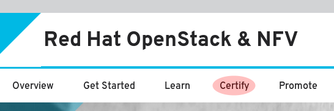
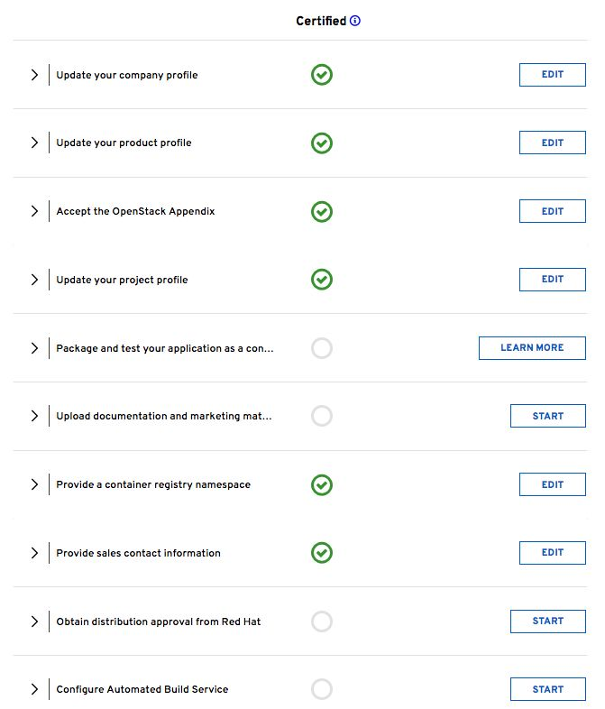
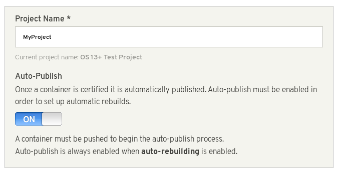
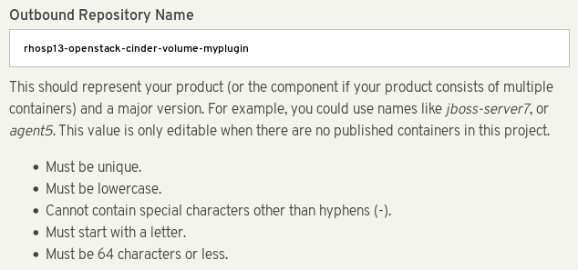
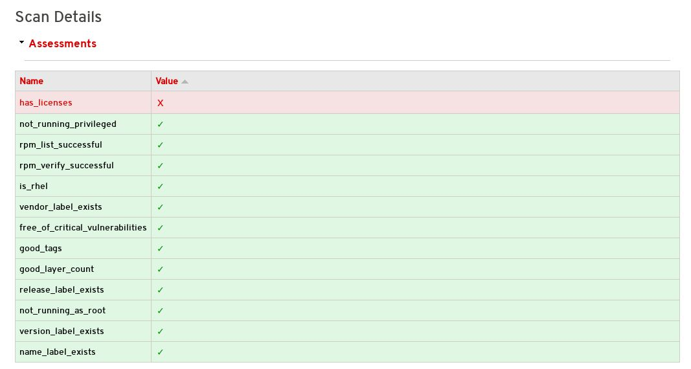

Partner Integration
Integrating certified third party software and hardware in a Red Hat OpenStack Platform environment
Abstract
Chapter 1. Introduction
This document has been created to help Red Hat OpenStack Platform partners in their efforts to integrate solutions with Red Hat OpenStack Platform director as the tool used to install and manage the deployment lifecycle of an OpenStack Platform environment. Integration with the director enables seamless adoption of your technology. You can find broad benefits in an optimization of resources, reduction in deployment times and reduction in lifecycle management costs.
Looking forward, OpenStack Platform director integration is a strong move toward providing rich integration with existing enterprise management systems and processes. Within the Red Hat product portfolio, tools such as CloudForms are expected to have visibility into director’s integrations and provide broader exposure for management of service deployment.
1.1. Partner Integration Requirements
You must meet several prerequisites before meaningful integration work can be completed with the director. These requirements are not limited to technical integration and also include various levels of partner solution documentation. The goal is to create a shared understanding of the entire integration as a basis for Red Hat engineering, partner managers, and support resources to facilitate work.
The first requirement is related to Red Hat OpenStack Platform solution certification. To be included with OpenStack Platform director, the partner solution must first be certified with Red Hat OpenStack Platform.
OpenStack Plug-in Certification Guides
OpenStack Application Certification Guides
OpenStack Bare Metal Certification Guides
Chapter 2. Architecture
The director advocates the use of native OpenStack APIs to configure, deploy, and manage OpenStack environments itself. This means integration with director requires integrating with these native OpenStack APIs and supporting components. The major benefit of utilizing such APIs is that they are well documented, undergo extensive integration testing upstream, are mature, and makes understanding how the director works easier for those that have a foundational knowledge of OpenStack. This also means the director automatically inherits core OpenStack feature enhancements, security patches, and bug fixes.
The Red Hat OpenStack Platform director is a toolset for installing and managing a complete OpenStack environment. It is based primarily on the OpenStack project TripleO, which is an abbreviation for "OpenStack-On-OpenStack". This project takes advantage of OpenStack components to install a fully operational OpenStack environment. This includes new OpenStack components that provision and control bare metal systems to use as OpenStack nodes. This provides a simple method for installing a complete Red Hat OpenStack Platform environment that is both lean and robust.
The Red Hat OpenStack Platform director uses two main concepts: an Undercloud and an Overcloud. This director itself is comprised of a subset of OpenStack components that form a single-system OpenStack environment, otherwise known as the Undercloud. The Undercloud acts as a management system that can create a production-level cloud for workloads to run. This production-level cloud is the Overcloud. For more information on the Overcloud and the Undercloud, see the Director Installation and Usage guide.
Director ships with tools, utilities, and example templates for creating an Overcloud configuration. The director captures configuration data, parameters, and network topology information then uses this information in conjunction with components such as Ironic, Heat, and Puppet to orchestrate an Overcloud installation.
Partners have varied requirements. Understanding the director’s architecture aids in understand which components matter for a given integration effort.
2.1. Core Components
This section examines some of the core components of the Red Hat OpenStack Platform director and describes how they contribute to Overcloud creation.
2.1.1. Ironic
Ironic provides dedicated bare metal hosts to end users through self-service provisioning. The director uses Ironic to manage the lifecycle of the bare metal hardware in our Overcloud. Ironic has its own native API for defining bare metal nodes. Administrators aiming to provision OpenStack environments with the director must register their nodes with Ironic using a specific driver. The main supported driver is The Intelligent Platform Management Interface (IPMI) as most hardware contains some support for IPMI power management functions. However, ironic also contains vendor specific equivalents such as HP iLO or Dell DRAC. Ironic controls the power management of the nodes and gathers hardware information or facts using a introspection mechanism. The director uses the information obtained from the introspection process to match node to various OpenStack environment roles, such as Controller nodes, Compute nodes, and storage nodes. For example, a discovered node with 10 disks will more than likely be provisioned as a storage node.
Partners wishing to have director support for their hardware will need to have driver coverage in Ironic.
2.1.2. Heat
Heat acts as an application stack orchestration engine. This allows organizations to define elements for a given application before deploying it to a cloud. This involves creating a stack template that includes a number of infrastructure resources (e.g. instances, networks, storage volumes, elastic IPs, etc) along with a set of parameters for configuration. Heat creates these resources based on a given dependency chain, monitors them for availability, and scales them where necessary. These templates enable application stacks to become portable and achieve repeatable results.
The director uses the native OpenStack Heat APIs to provision and manage the resources associated with deploying an Overcloud. This includes precise details such as defining the number of nodes to provision per node role, the software components to configure for each node, and the order in which the director configures these components and node types. The director also uses Heat for troubleshooting a deployment and making changes post-deployment with ease.
The following example is a snippet from a Heat template that defines parameters of a Controller node:
NeutronExternalNetworkBridge:
description: Name of bridge used for external network traffic.
type: string
default: 'br-ex'
NeutronBridgeMappings:
description: >
The OVS logical->physical bridge mappings to use. See the Neutron
documentation for details. Defaults to mapping br-ex - the external
bridge on hosts - to a physical name 'datacentre' which can be used
to create provider networks (and we use this for the default floating
network) - if changing this either use different post-install network
scripts or be sure to keep 'datacentre' as a mapping network name.
type: string
default: "datacentre:br-ex"Heat consumes templates included with the director to facilitate the creation of an Overcloud, which includes calling Ironic to power the nodes. We can view the resources (and their status) of an in-progress Overcloud using the standard Heat tools. For example, you can use the Heat tools to display the Overcloud as a nested application stack.
Heat provides a comprehensive and powerful syntax for declaring and creating production OpenStack clouds. However, it requires some prior understanding and proficiency for partner integration. Every partner integration use case requires Heat templates.
2.1.3. Puppet
Puppet is a configuration management and enforcement tool. It is used as a mechanism to describe the end state of a machine and keep it that way. You define this end state in a Puppet manifest. Puppet supports two models:
- A standalone mode in which instructions in the form of manifests are ran locally
- A server mode where it retrieves its manifests from a central server, called a Puppet Master.
Administrators make changes in two ways: either uploading new manifests to a node and executing them locally, or in the client/server model by making modifications on the Puppet Master.
We use Puppet in many areas of director:
- We use Puppet on the Undercloud host locally to install and configure packages as per the configuration laid out in undercloud.conf.
- We inject the openstack-puppet-modules package into the base Overcloud image. These Puppet modules are ready for post-deployment configuration. By default, we create an image that contains all OpenStack services and use it for each node.
- We provide additional Puppet manifests and parameters to the nodes via Heat, and apply the configuration after the Overcloud’s deployment. This includes the services to enable and start and the OpenStack configuration to apply, which are dependent on the node type.
We provide Puppet hieradata to the nodes. The Puppet modules and manifests are free from site or node-specific parameters to keep the manifests consistent. The hieradata acts as a form of parameterized values that you can push to a Puppet module and reference in other areas. For example, to reference the MySQL password inside of a manifest, save this information as hieradata and reference it within the manifest.
Viewing the hieradata:
[root@localhost ~]# grep mysql_root_password hieradata.yaml # View the data in the hieradata file openstack::controller::mysql_root_password: ‘redhat123'
Referencing it in the Puppet manifest:
[root@localhost ~]# grep mysql_root_password example.pp # Now referenced in the Puppet manifest mysql_root_password => hiera(‘openstack::controller::mysql_root_password')
Partner integrated services that need package installation and service enablement should consider creating Puppet modules to meet their requirement. For examples, see Section 4.2, “Obtaining OpenStack Puppet Modules” for information on how to obtain current OpenStack Puppet modules.
2.1.4. TripleO and TripleO Heat Templates
As mentioned previously, the director is based on the upstream TripleO project. This project combines a set of OpenStack services that:
- Store Overcloud images (Glance)
- Orchestrate the Overcloud (Heat)
- Provision bare metal machines (Ironic and Nova)
TripleO also includes a Heat template collection that defines a Red Hat-supported Overcloud environment. The director, using Heat, reads this template collection and orchestrates the Overcloud stack.
2.1.5. Composable Services
Each aspect of Red Hat OpenStack Platform is broken into a composable service. This means you can define different roles using different combinations of services. For example, an administrator might aim to move the networking agents from the default Controller node to a standalone Networker node.
For more information about the composable service architecture, see Chapter 6, Composable Services.
2.1.6. Containerized Services and Kolla
Each of the main Red Hat OpenStack Platform services run in containers. This provides a method of keep each service within its own isolated namespace separated from the host. This means:
- The deployment of services is performed by pulling container images from the Red Hat Custom Portal and running them.
-
The management functions, like starting and stopping services, operate through the
podmancommand. - Upgrading containers require pulling new container images and replacing the existing containers with newer versions.
Red Hat OpenStack Platform uses a set of containers built and managed with the kolla toolset.
2.1.7. Ansible
OpenStack Platform uses Ansible is used to drive certain functions in relation to composable service upgrades. This includes functions such as starting and stopping certain services and perfoming database upgrades. These upgrade tasks are defined within composable service templates.
Chapter 3. Overcloud Images
The Red Hat OpenStack Platform director provides images for the Overcloud. The QCOW image in this collection contains a base set of software components that integrate together to form various Overcloud roles, such as Compute, Controller, and storage nodes. In some situations, you might aim to modify certain aspects of the Overcloud image to suit your needs, such installing additional components to nodes.
This document describes a series of actions to use the virt-customize tool to modify an existing Overcloud image to augment an existing Controller node. For example, you can use these procedures to install additional ml2 plugins, Cinder backends, or monitoring agents not shipped with the initial image.
If you modify the Overcloud image to include third-party software and report an issue, Red Hat may request you reproduce the issue using an unmodified image in accordance with our general third-party support policy: https://access.redhat.com/articles/1067.
3.1. Obtaining the Overcloud Images
The director requires several disk images for provisioning Overcloud nodes. This includes:
- A introspection kernel and ramdisk - Used for bare metal system introspection over PXE boot.
- A deployment kernel and ramdisk - Used for system provisioning and deployment.
- An Overcloud kernel, ramdisk, and full image - A base Overcloud system that is written to the node’s hard disk.
Obtain these images from the rhosp-director-images and rhosp-director-images-ipa packages:
$ sudo dnf install rhosp-director-images rhosp-director-images-ipa
Extract the archives to the images directory on the stack user’s home (/home/stack/images):
$ cd ~/images $ for i in /usr/share/rhosp-director-images/overcloud-full-latest-16.1.tar /usr/share/rhosp-director-images/ironic-python-agent-latest-16.1.tar; do tar -xvf $i; done
3.2. Initrd: Modifying the Initial Ramdisks
Some situations might require you to modify the initial ramdisk. For example, you might require a certain driver available when you boot the nodes during the introspection or provisioning processes. The following procedure shows how to modify an initial ramdisk. In the context of the Overcloud, this includes either:
-
The introspection ramdisk -
ironic-python-agent.initramfs -
The provisioning ramdisk -
overcloud-full.initrd
This procedure adds an additional RPM package to the ironic-python-agent.initramfs ramdisk as an example.
Log in as the root user and create a temporary directory for the ramdisk
# mkdir ~/ipa-tmp # cd ~/ipa-tmp
Use the skipcpio and `cpio commands to extract the ramdisk to the temporary directory:
# /usr/lib/dracut/skipcpio ~/images/ironic-python-agent.initramfs | zcat | cpio -ivd | pax -r
Install an RPM package to the extracted contents:
# rpm2cpio ~/RPMs/python-proliantutils-2.1.7-1.el7ost.noarch.rpm | pax -r
Recreate the new ramdisk:
# find . 2>/dev/null | cpio --quiet -c -o | gzip -8 > /home/stack/images/ironic-python-agent.initramfs # chown stack: /home/stack/images/ironic-python-agent.initramfs
Verify the new package now exists in the ramdisk:
# lsinitrd /home/stack/images/ironic-python-agent.initramfs | grep proliant
3.3. QCOW: Installing virt-customize to the director
The libguestfs-tools package contains the virt-customize tool. Install the libguestfs-tools from the rhel-8-for-x86_64-appstream-eus-rpms repository:
$ sudo dnf install libguestfs-tools
3.4. QCOW: Inspecting the Overcloud Image
Before you can review the contents of the overcloud-full.qcow2 image, you must create a virtual machine that uses this image.
To create a virtual machine instance that uses the overcloud-full.qcow2 image, enter the guestmount command:
$ mkdir ~/overcloud-full $ guestmount -a overcloud-full.qcow2 -i --ro ~/overcloud-full
You can review the contents of the QCOW2 image in ~/overcloud-full.
Alternatively, you can use virt-manager to create a virtual machine with the following boot options:
- Kernel path: /overcloud-full.vmlinuz
- initrd path: /overcloud-full.initrd
- Kernel arguments: root=/dev/sda
3.5. QCOW: Setting the Root Password
Set the password for the root user on image:
$ virt-customize --selinux-relabel -a overcloud-full.qcow2 --root-password password:test [ 0.0] Examining the guest ... [ 18.0] Setting a random seed [ 18.0] Setting passwords [ 19.0] Finishing off
This provides administration-level access for your nodes through the console.
3.6. QCOW: Registering the Image
Register your image temporarily to enable Red Hat repositories relevant to your customizations:
$ virt-customize --selinux-relabel -a overcloud-full.qcow2 --run-command 'subscription-manager register --username=[username] --password=[password]' [ 0.0] Examining the guest ... [ 10.0] Setting a random seed [ 10.0] Running: subscription-manager register --username=[username] --password=[password] [ 24.0] Finishing off
Make sure to replace the [username] and [password] with your Red Hat customer account details. This runs the following command on the image:
subscription-manager register --username=[username] --password=[password]
This registers your Overcloud image to the Red Hat Content Delivery Network:
3.7. QCOW: Attaching a Subscription and Enabling Red Hat Repositories
Find a list of pool ID from your account’s subscriptions:
$ sudo subscription-manager list
Choose a subscription pool ID and attach it to the image:
$ virt-customize --selinux-relabel -a overcloud-full.qcow2 --run-command 'subscription-manager attach --pool [subscription-pool]' [ 0.0] Examining the guest ... [ 12.0] Setting a random seed [ 12.0] Running: subscription-manager attach --pool [subscription-pool] [ 52.0] Finishing off
Make sure to replace the [subscription-pool] with your chosen subscription pool ID. This runs the following command on the image:
subscription-manager attach --pool [subscription-pool]
This adds the pool to the image, which allows you to enable Red Hat repositories with the following command:
$ subscription-manager repos --enable=[repo-id]
3.8. QCOW: Copying a Custom Repository File
Adding third-party software to the image requires additional repositories. For example, the following is an example repo file that contains configuration to use the OpenDaylight repository content:
$ cat opendaylight.repo [opendaylight] name=OpenDaylight Repository baseurl=https://nexus.opendaylight.org/content/repositories/opendaylight-yum-epel-8-x86_64/ gpgcheck=0
Copy the repository file on to the image:
$ virt-customize --selinux-relabel -a overcloud-full.qcow2 --upload opendaylight.repo:/etc/yum.repos.d/ [ 0.0] Examining the guest ... [ 12.0] Setting a random seed [ 12.0] Copying: opendaylight.repo to /etc/yum.repos.d/ [ 13.0] Finishing off
The --copy-in option copies the repository file to /etc/yum.repos.d/ on the Overcloud image.
Important: Red Hat does not offer support for software from non-certified vendors. Check with your Red Hat support representative that the software you aim to install is supported.
3.9. QCOW: Installing RPMs
Use the virt-customize command to install packages to the image:
$ virt-customize --selinux-relabel -a overcloud-full.qcow2 --install opendaylight [ 0.0] Examining the guest ... [ 11.0] Setting a random seed [ 11.0] Installing packages: opendaylight [ 91.0] Finishing off
The --install option allows you to specify a package to install.
3.10. QCOW: Cleaning the Subscription Pool
After installing the necessary packages to customize the image, we now remove our subscriptions and unregister the image:
$ virt-customize --selinux-relabel -a overcloud-full.qcow2 --run-command 'subscription-manager remove --all' [ 0.0] Examining the guest ... [ 12.0] Setting a random seed [ 12.0] Running: subscription-manager remove --all [ 18.0] Finishing off
This removes all subscription pools from the image.
3.11. QCOW: Unregistering the Image
Unregister the image. This is so the Overcloud deployment process can deploy the image to your nodes and register each of them individually.
$ virt-customize --selinux-relabel -a overcloud-full.qcow2 --run-command 'subscription-manager unregister' [ 0.0] Examining the guest ... [ 11.0] Setting a random seed [ 11.0] Running: subscription-manager unregister [ 17.0] Finishing off
3.12. QCOW: Reset the Machine ID
Reset the machine ID for the image. This ensures machines using this image do not use duplicate machine IDs.
$ virt-sysprep --operation machine-id -a overcloud-full.qcow2
3.13. Uploading the Images to the Director
After modifying the image, upload it to the director. Make sure to source the stackrc file so that you can access the director from the command line:
$ source stackrc $ openstack overcloud image upload --image-path /home/stack/images/
This uploads the following images into the director: bm-deploy-kernel, bm-deploy-ramdisk, overcloud-full, overcloud-full-initrd, and overcloud-full-vmlinuz. These are the images for deployment and the Overcloud. The script also installs the introspection images on the director’s PXE server. View a list of the images in the CLI using the following command:
$ openstack image list +--------------------------------------+------------------------+ | ID | Name | +--------------------------------------+------------------------+ | 765a46af-4417-4592-91e5-a300ead3faf6 | bm-deploy-ramdisk | | 09b40e3d-0382-4925-a356-3a4b4f36b514 | bm-deploy-kernel | | ef793cd0-e65c-456a-a675-63cd57610bd5 | overcloud-full | | 9a51a6cb-4670-40de-b64b-b70f4dd44152 | overcloud-full-initrd | | 4f7e33f4-d617-47c1-b36f-cbe90f132e5d | overcloud-full-vmlinuz | +--------------------------------------+------------------------+
This list will not show the introspection PXE images (agent.*). The director copies these files to /httpboot.
[stack@host1 ~]$ ls /httpboot -l total 151636 -rw-r--r--. 1 ironic ironic 269 Sep 19 02:43 boot.ipxe -rw-r--r--. 1 root root 252 Sep 10 15:35 inspector.ipxe -rwxr-xr-x. 1 root root 5027584 Sep 10 16:32 agent.kernel -rw-r--r--. 1 root root 150230861 Sep 10 16:32 agent.ramdisk drwxr-xr-x. 2 ironic ironic 4096 Sep 19 02:45 pxelinux.cfg
Chapter 4. Configuration
This chapter explores how to provide additions to the OpenStack Puppet modules. This includes some basic guidelines on developing Puppet modules.
4.1. Learning Puppet Basics
The following section provide a few basic to help you understand Puppet’s syntax and the structure of a Puppet module.
4.1.1. Examining the Anatomy of a Puppet Module
Before contributing to the OpenStack modules, we need to understand the components that create a Puppet module.
- Manifests
Manifests are files that contain code to define a set of resource and their attributes. A resource is any configurable part of a system. Examples of resources include packages, services, files, users and groups, SELinux configuration, SSH key authentication, cron jobs, and more. A manifest defines each required resource using a set of key-value pairs for their attributes. For example:
package { 'httpd': ensure => installed, }This declaration checks if the httpd package is installed. If not, the manifest executes dnf and installs it. Manifests are located in the manifest directory of a module. Puppet modules also use a test directory for test manifests. These manifests are used to test certain classes contained in your official manifests.
- Classes
- Classes act as a method for unifying multiple resources in a manifest. For example, if installing and configuring a HTTP server, you might create a class with three resources: one to install the HTTP server packages, one to configure the HTTP server, and one to start or enable the server. You can also refer to classes from other modules, which applies their configuration. For example, if you had to configure an application that also required a webserver, you can refer to the previously mentioned class for the HTTP server.
- Static Files
Modules can contain static files that Puppet can copy to certain locations on your system. These locations, and other attributes such as permissions, are defined through file resource declarations in manifests.
Static files are located in the files directory of a module.
- Templates
Sometimes configuration files require custom content. In this situation, users would create a template instead of a static file. Like static files, templates are defined in manifests and copied to locations on a system. The difference is that templates allow Ruby expressions to define customized content and variable input. For example, if you wanted to configure httpd with a customizable port then the template for the configuration file would include:
Listen <%= @httpd_port %>
The
httpd_portvariable in this case is defined in the manifest that references this template.Templates are located in the templates directory of a module.
- Plugins
Plugins allow for aspects that extend beyond the core functionality of Puppet. For example, you can use plugins to define custom facts, custom resources, or new functions. For example, a database administrator might need a resource type for PostgreSQL databases. This could help the database administrator populate PostgreSQL with a set of new databases after installing PostgreSQL. As a result, the database administrator need only create a Puppet manifest that ensures PostgreSQL installs and the databases are created afterwards.
Plugins are located in the lib directory of a module. This includes a set of subdirectories depending on the plugin type. For example:
-
/lib/facter- Location for custom facts. -
/lib/puppet/type- Location for custom resource type definitions, which outline the key-value pairs for attributes. -
/lib/puppet/provider- Location for custom resource providers, which are used in conjunction with resource type definitions to control resources. -
/lib/puppet/parser/functions- Location for custom functions.
-
4.1.2. Installing a Service
Some software requires package installations. This is one function a Puppet module can perform. This requires a resource definition that defines configurations for a certain package.
For example, to install the httpd package through the mymodule module, you would add the following content to a Puppet manifest in the mymodule module:
class mymodule::httpd {
package { 'httpd':
ensure => installed,
}
}
This code defines a subclass of mymodule called httpd, then defines a package resource declaration for the httpd package. The ensure => installed attribute tells Puppet to check if the package is installed. If it is not installed, Puppet executes dnf to install it.
4.1.3. Starting and Enabling a Service
After installing a package, you might aim to start the service. Use another resource declaration called service. This requires editing the manifest with the following content:
class mymodule::httpd {
package { 'httpd':
ensure => installed,
}
service { 'httpd':
ensure => running,
enable => true,
require => Package["httpd"],
}
}This achieves a couple of things:
-
The
ensure => runningattribute checks if the service is running. If not, Puppet enables it. -
The
enable => trueattribute sets the service to run when the system boots. -
The
require => Package["httpd"]attribute defines an ordering relationship between one resource declaration and another. In this case, it ensures the httpd service starts after the httpd package installs. This creates a dependency between the service and its respective package.
4.1.4. Configuring a Service
The previous two steps show how to install and enable a service through Puppet. However, you might aim to provide some custom configuration to the services. In our example, the HTTP server already provides some default configuration in /etc/httpd/conf/httpd.conf, which provides a web host on port 80. This section adds some extra configuration to provide an additional web host on a user-specified port.
For this to occur, you use a template file to store the HTTP configuration file. This is because the user-defined port requires variable input. In the module’s templates directory, you would add a file called myserver.conf.erb with the following contents:
Listen <%= @httpd_port %>
NameVirtualHost *:<%= @httpd_port %>
<VirtualHost *:<%= @httpd_port %>>
DocumentRoot /var/www/myserver/
ServerName *:<%= @fqdn %>>
<Directory "/var/www/myserver/">
Options All Indexes FollowSymLinks
Order allow,deny
Allow from all
</Directory>
</VirtualHost>
This template follows the standard syntax for Apache web server configuration. The only difference is the inclusion of Ruby escape characters to inject variables from our module. For example, httpd_port, which we use to specify the web server port.
Notice also the inclusion of fqdn, which is a variable that stores the fully qualified domain name of the system. This is known as a system fact. System facts are collected from each system prior to generating each respective system’s Puppet catalog. Puppet uses the facter command to gather these system facts and you can also run facter to view a list of these facts.
After saving this file, you would add the resource to module’s Puppet manifest :
class mymodule::httpd {
package { 'httpd':
ensure => installed,
}
service { 'httpd':
ensure => running,
enable => true,
require => Package["httpd"],
}
file {'/etc/httpd/conf.d/myserver.conf':
notify => Service["httpd"],
ensure => file,
require => Package["httpd"],
content => template("mymodule/myserver.conf.erb"),
}
file { "/var/www/myserver":
ensure => "directory",
}
}This achieves the following:
-
We add a file resource declaration for the server configuration file (
/etc/httpd/conf.d/myserver.conf). The content for this file is themyserver.conf.erbtemplate we created earlier. We also check thehttpdpackage is installed before adding this file. -
We also add a second file resource declaration. This one creates a directory (
/var/www/myserver) for our web server. -
We also add a relationship between the configuration file and the httpd service using the
notify => Service["httpd"]attribute. This checks our configuration file for any changes. If the file has changed, Puppet restarts the service.
4.2. Obtaining OpenStack Puppet Modules
The Red Hat OpenStack Platform uses the official OpenStack Puppet modules, which you obtain from the openstack group on Github. Navigate your browser to https://github.com/openstack and in the filters section search for puppet. All Puppet module use the prefix puppet-.
For this example, we will examine the official OpenStack Block Storage (cinder), which you can clone using the following command:
$ git clone https://github.com/openstack/puppet-cinder.git
This creates a clone of the Puppet module for Cinder.
4.3. Adding Configuration for a Puppet Module
The OpenStack modules primarily aim to configure the core service. Most also contain additional manifests to configure additional services, sometimes known as backends, agents, or plugins. For example, the cinder module contains a directory called backends, which contains configuration options for different storage devices including NFS, iSCSI, Red Hat Ceph Storage, and others.
For example, the manifests/backends/nfs.pp file contains the following configuration
define cinder::backend::nfs (
$volume_backend_name = $name,
$nfs_servers = [],
$nfs_mount_options = undef,
$nfs_disk_util = undef,
$nfs_sparsed_volumes = undef,
$nfs_mount_point_base = undef,
$nfs_shares_config = '/etc/cinder/shares.conf',
$nfs_used_ratio = '0.95',
$nfs_oversub_ratio = '1.0',
$extra_options = {},
) {
file {$nfs_shares_config:
content => join($nfs_servers, "\n"),
require => Package['cinder'],
notify => Service['cinder-volume']
}
cinder_config {
"${name}/volume_backend_name": value => $volume_backend_name;
"${name}/volume_driver": value =>
'cinder.volume.drivers.nfs.NfsDriver';
"${name}/nfs_shares_config": value => $nfs_shares_config;
"${name}/nfs_mount_options": value => $nfs_mount_options;
"${name}/nfs_disk_util": value => $nfs_disk_util;
"${name}/nfs_sparsed_volumes": value => $nfs_sparsed_volumes;
"${name}/nfs_mount_point_base": value => $nfs_mount_point_base;
"${name}/nfs_used_ratio": value => $nfs_used_ratio;
"${name}/nfs_oversub_ratio": value => $nfs_oversub_ratio;
}
create_resources('cinder_config', $extra_options)
}This achieves a couple of things:
-
The
definestatement creates a defined type calledcinder::backend::nfs. A defined type is similar to a class; the main difference is Puppet evaluates a defined type multiple times. For example, you might require multiple NFS backends and as such the configuration requires multiple evaluations for each NFS share. -
The next few lines define the parameters in this configuration and their default values. The default values are overwritten if the user passes new values to the
cinder::backend::nfsdefined type. -
The
filefunction is a resource declaration that calls for the creation of a file. This file contains a list of our NFS shares and name for this file is defined in the parameters ($nfs_shares_config = '/etc/cinder/shares.conf'). Note the additional attributes: -
The
contentattribute creates a list using the$nfs_serversparameter. -
The
requireattribute ensures that thecinderpackage is installed. -
The
notifyattribute tells thecinder-volumeservice to reset. The
cinder_configfunction is a resource declaration that uses a plugin from thelib/puppet/directory in the module. This plugin adds configuration to the/etc/cinder/cinder.conffile. Each line in this resource adds a configuration options to the relevant section in thecinder.conffile. For example, if the$nameparameter ismynfs, then the following attributes:"${name}/volume_backend_name": value => $volume_backend_name; "${name}/volume_driver": value => 'cinder.volume.drivers.nfs.NfsDriver'; "${name}/nfs_shares_config": value => $nfs_shares_config;Would save the following to the
cinder.conffile:[mynfs] volume_backend_name=mynfs volume_driver=cinder.volume.drivers.nfs.NfsDriver nfs_shares_config=/etc/cinder/shares.conf
-
The
create_resourcesfunction converts a hash into a set of resources. In this case, the manifest converts the$extra_optionshash to a set of additional configuration options for the backend. This provides a flexible method to add further configuration options not included in the manifest’s core parameters.
This shows the importance of including a manifest to configure your hardware’s OpenStack driver. The manifest provides a simple method for the director to include configuration options relevant to your hardware. This acts as a main integration point for the director to configure your Overcloud to use your hardware.
4.4. Adding Hiera Data to Puppet Configuration
Puppet contains a tool called Hiera, which acts as a key/value systems that provides node-specific configuration. These keys and their values are usually stored in files located in /etc/puppet/hieradata. The /etc/puppet/hiera.yaml file defines the order that Puppet reads the files in the hieradata directory.
When configuring the Overcloud, Puppet uses this data to overwrite the default values for certain Puppet classes. For example, the default NFS mount options for cinder::backend::nfs in puppet-cinder are undefined:
$nfs_mount_options = undef,
However, you can create your own manifest that calls the cinder::backend::nfs defined type and replace this option with Hiera data:
cinder::backend::nfs { $cinder_nfs_backend:
nfs_mount_options => hiera('cinder_nfs_mount_options'),
}
This means the nfs_mount_options parameter takes uses Hiera data value from the cinder_nfs_mount_options key:
cinder_nfs_mount_options: rsize=8192,wsize=8192
Alternatively, you can use the Hiera data to overwrite cinder::backend::nfs::nfs_mount_options parameter directly so that it applies to all evalutations of the NFS configuration. For example:
cinder::backend::nfs::nfs_mount_options: rsize=8192,wsize=8192
The above Hiera data overwrites this parameter on each evaluation of cinder::backend::nfs.
Chapter 5. Orchestration
The director uses Heat Orchestration Templates (HOT) as a template format for its Overcloud deployment plan. Templates in HOT format are usually expressed in YAML format. The purpose of a template is to define and create a stack, which is a collection of resources that Heat creates, and the configuration of the resources. Resources are objects in OpenStack and can include compute resources, network configuration, security groups, scaling rules, and custom resources.
The Heat template file extension must be .yaml or .template, or it will not be treated as a custom template resource.
This chapter provides some basics for understanding the HOT syntax so that you can create your own template files.
5.1. Learning Heat Template Basics
5.1.1. Understanding Heat Templates
The structure of a Heat template has three main sections:
- Parameters
-
These are settings passed to Heat, which provide a way to customize a stack, and any default values for parameters without passed values. These settings are defined in the
parameterssection of a template. - Resources
-
These are the specific objects to create and configure as part of a stack. OpenStack contains a set of core resources that span across all components. These are defined in the
resourcessection of a template. - Output
-
These are values passed from Heat after the creation of the stack. You can access these values either through the Heat API or client tools. These are defined in the
outputsection of a template.
Here is an example of a basic Heat template:
heat_template_version: 2013-05-23
description: > A very basic Heat template.
parameters:
key_name:
type: string
default: lars
description: Name of an existing key pair to use for the instance
flavor:
type: string
description: Instance type for the instance to be created
default: m1.small
image:
type: string
default: cirros
description: ID or name of the image to use for the instance
resources:
my_instance:
type: OS::Nova::Server
properties:
name: My Cirros Instance
image: { get_param: image }
flavor: { get_param: flavor }
key_name: { get_param: key_name }
output:
instance_name:
description: Get the instance's name
value: { get_attr: [ my_instance, name ] }
This template uses the resource type type: OS::Nova::Server to create an instance called my_instance with a particular flavor, image, and key. The stack can return the value of instance_name, which is called My Cirros Instance.
A Heat template also requires the heat_template_version parameter, which defines the syntax version to use and the functions available. For more information, see the Official Heat Documentation.
5.1.2. Understanding Environment Files
An environment file is a special type of template that provides customization for your Heat templates. This includes three key parts:
- Resource Registry
-
This section defines custom resource names, linked to other Heat templates. This provides a method to create custom resources that do not exist within the core resource collection. These are defined in the
resource_registrysection of an environment file. - Parameters
-
These are common settings you apply to the top-level template’s parameters. For example, if you have a template that deploys nested stacks, such as resource registry mappings, the parameters only apply to the top-level template and not templates for the nested resources. Parameters are defined in the
parameterssection of an environment file. - Parameter Defaults
-
These parameters modify the default values for parameters in all templates. For example, if you have a Heat template that deploys nested stacks, such as resource registry mappings,the parameter defaults apply to all templates. The parameter defaults are defined in the
parameter_defaultssection of an environment file.
It is recommended to use parameter_defaults instead of parameters When creating custom environment files for your Overcloud. This is so the parameters apply to all stack templates for the Overcloud.
An example of a basic environment file:
resource_registry: OS::Nova::Server::MyServer: myserver.yaml parameter_defaults: NetworkName: my_network parameters: MyIP: 192.168.0.1
For example, this environment file (my_env.yaml) might be included when creating a stack from a certain Heat template (my_template.yaml). The my_env.yaml files creates a new resource type called OS::Nova::Server::MyServer. The myserver.yaml file is a Heat template file that provides an implementation for this resource type that overrides any built-in ones. You can include the OS::Nova::Server::MyServer resource in your my_template.yaml file.
The MyIP applies a parameter only to the main Heat template that deploys along with this environment file. In this example, it only applies to the parameters in my_template.yaml.
The NetworkName applies to both the main Heat template (in this example, my_template.yaml) and the templates associated with resources included the main template, such as the OS::Nova::Server::MyServer resource and its myserver.yaml template in this example.
The environment file extension must be .yaml or .template, or it will not be treated as a custom template resource.
5.2. Obtaining the Default Director Templates
The director uses an advanced Heat template collection used to create an Overcloud. This collection is available from the openstack group on Github in the openstack-tripleo-heat-templates repository. To obtain a clone of this template collection, run the following command:
$ git clone https://github.com/openstack/tripleo-heat-templates.git
The Red Hat-specific version of this template collection is available from the openstack-tripleo-heat-template package, which installs the collection to /usr/share/openstack-tripleo-heat-templates.
There are many Heat templates and environment files in this collection. However, the main files and directories to note in this template collection are:
overcloud.j2.yaml- This is the main template file used to create the Overcloud environment. This file uses Jinja2 syntax to iterate over certain sections in the template to create custom roles. The Jinja2 formatting is rendered into YAML during the Overcloud deployment process.
overcloud-resource-registry-puppet.j2.yaml- This is the main environment file used to create the Overcloud environment. It provides a set of configurations for Puppet modules stored on the Overcloud image. After the director writes the Overcloud image to each node, Heat starts the Puppet configuration for each node using the resources registered in this environment file. This file uses Jinja2 syntax to iterate over certain sections in the template to create custom roles. The Jinja2 formatting is rendered into YAML during the overcloud deployment process.
roles_data.yaml- A file that defines the roles in an overcloud and maps services to each role.
network_data.yaml-
A file that defines the networks in an overcloud and their properties such as subnets, allocation pools, and VIP status. The default
network_datafile contains the default networks: External, Internal Api, Storage, Storage Management, Tenant, and Management. You can create a customnetwork_datafile and add it to youropenstack overcloud deploycommand with the-noption. plan-environment.yaml- A file that defines the metadata for your overcloud plan. This includes the plan name, main template to use, and environment files to apply to the overcloud.
capabilities-map.yaml-
A mapping of environment files for an overcloud plan. Use this file to describe and enable environment files through the director’s web UI. Custom environment files detected in the
environmentsdirectory in an overcloud plan but not defined in thecapabilities-map.yamlare listed in the Other subtab of 2 Specify Deployment Configuration > Overall Settings on the web UI. environments-
Contains additional Heat environment files that you can use with your Overcloud creation. These environment files enable extra functions for your resulting OpenStack environment. For example, the directory contains an environment file for enabling Cinder NetApp backend storage (
cinder-netapp-config.yaml). Any environment files detected in this directory that are not defined in thecapabilities-map.yamlfile are listed in the Other subtab of 2 Specify Deployment Configuration > Overall Settings in the director’s web UI. network- A set of Heat templates to help create isolated networks and ports.
puppet-
Templates mostly driven by configuration with puppet. The aforementioned
overcloud-resource-registry-puppet.j2.yamlenvironment file uses the files in this directory to drive the application of the Puppet configuration on each node. puppet/services- A directory containing Heat templates for all services in the composable service architecture.
extraconfig- Templates used to enable extra functionality.
firstboot-
Provides example
first_bootscripts that the director uses when initially creating the nodes.
Previous versions of this guide contained reference material for using configuration hooks to integrate services. The recommended method for partners to integrate services is to now use the composable service framework. For more information, see Chapter 6, Composable Services.
Chapter 6. Composable Services
Red Hat OpenStack Platform now includes the ability to define custom roles and compose service combinations on roles, see Composable Services and Custom Roles in the Advanced Overcloud Customization guide. As part of the integration, you can define your own custom services and include them on chosen roles. This section explores the composable service architecture and provides an example of how to integrate a custom service into the composable service architecture.
6.1. Examining Composable Service Architecture
The core Heat template collection contains two sets of composable service templates:
-
deploymentcontains the templates for key OpenStack Platform services. -
puppet/servicescontains legacy templates for configuring composable services. In some cases, the composable services use templates from this directory for compatibility. In most cases, the composable services use the templates in thedeploymentdirectory.
Each template contains a description that identifies its purpose. For example, the deployment/time/ntp-baremetal-puppet.yaml service template contains the following description:
description: > NTP service deployment using puppet, this YAML file creates the interface between the HOT template and the puppet manifest that actually installs and configure NTP.
These service templates are registered as resources specific to a Red Hat OpenStack Platform deployment. This means you can call each resource using a unique Heat resource namespace defined in the overcloud-resource-registry-puppet.j2.yaml file. All services use the OS::TripleO::Services namespace for their resource type.
Some resources use the base composable service templates directly. For example:
resource_registry: ... OS::TripleO::Services::Ntp: deployment/time/ntp-baremetal-puppet.yaml ...
However, core services require containers and use the containerized service templates. For example, the keystone containerized service uses the following resource:
resource_registry: ... OS::TripleO::Services::Keystone: deployment/keystone/keystone-container-puppet.yaml ...
These containerized templates usually reference other templates to include dependencies. For example, the deployment/keystone/keystone-container-puppet.yaml template stores the output of the base template in the ContainersCommon resource:
resources:
ContainersCommon:
type: ../containers-common.yaml
The containerized template can then incorporate functions and data from the containers-common.yaml template.
The overcloud.j2.yaml Heat template includes a section of Jinja2-based code to define a service list for each custom role in the roles_data.yaml file:
{{role.name}}Services:
description: A list of service resources (configured in the Heat
resource_registry) which represent nested stacks
for each service that should get installed on the {{role.name}} role.
type: comma_delimited_list
default: {{role.ServicesDefault|default([])}}
For the default roles, this creates the following service list parameters: ControllerServices, ComputeServices, BlockStorageServices, ObjectStorageServices, and CephStorageServices.
You define the default services for each custom role in the roles_data.yaml file. For example, the default Controller role contains the following content:
- name: Controller
CountDefault: 1
ServicesDefault:
- OS::TripleO::Services::CACerts
- OS::TripleO::Services::CephMon
- OS::TripleO::Services::CephExternal
- OS::TripleO::Services::CephRgw
- OS::TripleO::Services::CinderApi
- OS::TripleO::Services::CinderBackup
- OS::TripleO::Services::CinderScheduler
- OS::TripleO::Services::CinderVolume
- OS::TripleO::Services::Core
- OS::TripleO::Services::Kernel
- OS::TripleO::Services::Keystone
- OS::TripleO::Services::GlanceApi
- OS::TripleO::Services::GlanceRegistry
...
These services are then defined as the default list for the ControllerServices parameter.
You can also use an environment file to override the default list for the service parameters. For example, you can define ControllerServices as a parameter_default in an environment file to override the services list from the roles_data.yaml file.
6.2. Creating a User-Defined Composable Service
This example examines how to create a user-defined composable service and focuses on implementing a message of the day (motd) service. This example assumes the overcloud image contains a custom motd Puppet module loaded either through a configuration hook or through modifying the overcloud images as per Chapter 3, Overcloud Images.
When creating your own service, there are specific items to define in the service’s Heat template:
- parameters
The following are compulsory parameters that you must include in your service template:
-
ServiceData- A map of service specific data. Use an empty hash ({}) as thedefaultvalue as this parameter is overriden with values from the parent Heat template. -
ServiceNetMap- A map of services to networks. Use an empty hash ({}) as thedefaultvalue as this parameter is overriden with values from the parent Heat template. -
EndpointMap- A list of OpenStack service endpoints to protocols. Use an empty hash ({}) as thedefaultvalue as this parameter is overriden with values from the parent Heat template. -
DefaultPasswords- A list of default passwords. Use an empty hash ({}) as thedefaultvalue as this parameter is overriden with values from the parent Heat template. -
RoleName- Name of the role that this service is deployed. Use an empty string ('') as thedefaultvalue as this parameter is overriden with values from the parent Heat template. -
RoleParameters- Parameters specific to a role. These parameters are defined with the<RoleName>Parametersparameter, where<RoleNameis the name of the role. Use an empty hash ({}) as thedefaultvalue as this parameter is overriden with values from the parent Heat template.
Define any additional parameters that your service requires.
-
- outputs
- The following output parameters define the service configuration on the host. See Appendix A, Composable service parameters for information on all composable service parameters.
The following is an example Heat template (service.yaml) for the motd service:
heat_template_version: 2016-04-08
description: >
Message of the day service configured with Puppet
parameters:
ServiceNetMap:
default: {}
type: json
DefaultPasswords:
default: {}
type: json
EndpointMap:
default: {}
type: json
MotdMessage: 1
default: |
Welcome to my Red Hat OpenStack Platform environment!
type: string
description: The message to include in the motd
outputs:
role_data:
description: Motd role using composable services.
value:
service_name: motd
config_settings: 2
motd::content: {get_param: MotdMessage}
step_config: | 3
if hiera('step') >= 2 {
include ::motd
}- 1
- The template includes a
MotdMessageparameter used to define the message of the day. The parameter includes a default message but you can override it using the same parameter in a custom environment file, which is demonstrated later. - 2
- The
outputssection defines some service hieradata inconfig_settings. Themotd::contenthieradata stores the content from theMotdMessageparameter. ThemotdPuppet class eventually reads this hieradata and passes the user-defined message to the/etc/motdfile. - 3
- The
outputssection includes a Puppet manifest snippet instep_config. The snippet checks if the configuration has reached step 2 and, if so, runs themotdPuppet class.
6.3. Including a User-Defined Composable Service
The aim for this example is to configure the custom motd service only on our overcloud’s Controller nodes. This requires a custom environment file and custom roles data file included with our deployment.
First, add the new service to an environment file (env-motd.yaml) as a registered Heat resource within the OS::TripleO::Services namespace. For this example, the resource name for our motd service is OS::TripleO::Services::Motd:
resource_registry:
OS::TripleO::Services::Motd: /home/stack/templates/motd.yaml
parameter_defaults:
MotdMessage: |
You have successfully accessed my Red Hat OpenStack Platform environment!
Note that our custom environment file also includes a new message that overrides the default for MotdMessage.
The deployment will now include the motd service. However, each role that requires this new service must have an updated ServicesDefault listing in a custom roles_data.yaml file. In this example, we aim to only configure the service on Controller nodes.
Create a copy of the default roles_data.yaml file:
$ cp /usr/share/openstack-tripleo-heat-templates/roles_data.yaml ~/custom_roles_data.yaml
Edit this file, scroll to the Controller role, and include the service in the ServicesDefault listing:
- name: Controller
CountDefault: 1
ServicesDefault:
- OS::TripleO::Services::CACerts
- OS::TripleO::Services::CephMon
- OS::TripleO::Services::CephExternal
...
- OS::TripleO::Services::FluentdClient
- OS::TripleO::Services::VipHosts
- OS::TripleO::Services::Motd # Add the service to the end
When creating an overcloud, include the resulting environment file and the custom_roles_data.yaml file with your other environment files and deployment options:
$ openstack overcloud deploy --templates -e /home/stack/templates/env-motd.yaml -r ~/custom_roles_data.yaml [OTHER OPTIONS]
This includes our custom motd service in our deployment and configures the service on Controller nodes only.
Chapter 7. Building certified container images
You can use the Partner Build Service to build your application containers for certification. The Build Service builds containers from Git repositories that are Internet-accessible publicly or privately with an SSH key.
This section describes the steps to use the automated Build Service as part of the Red Hat OpenStack and NFV Zone to automatically build containerized partner platform plugins to Red Hat OpenStack Platform 16.1 base containers.
Prerequisites
To access the Automated Build System, you need to:
- Register with Red Hat Connect for Technology Partners.
- Apply for Zone access to the Red Hat OpenStack & NFV zone.
- Create a Product. The information you provide will be used when the certification is published in our catalog.
- Create a git repository for your plugin, with your Dockerfile and any components that you will include in the container.
Any problems registering with or accessing the Red Hat Connect site can be reported to connect@redhat.com.
7.1. Adding a container project
One project represents one partner image. If you have multiple images, you need to create multiple projects.
Procedure
- Log into "Red Hat Connect for Technology Partners" and click Zones.
- Scroll down and select the Red Hat OpenStack & NFV zone. Click anywhere in the box.
Click Certify to access your company’s existing products and projects.

- Click Add Project to create a new project.
Set the Project Name.
- Project name is not visible outside the system.
-
The project name should include
[product][version]-[extended-base-container-image]-[your-plugin] -
For OpenStack purposes the format is
rhospXX-baseimage-myplugin. -
Example:
rhosp16-openstack-cinder-volume-myplugin
Select the Product, Product Version and Release Category based on your product/plugin and its version.
- Product and its version should be created prior to creating projects.
- Set the label release category to Tech Preview. Generally Available is not an option until you have completed API testing using Red Hat Certification. Refer to the plugin certification requirements once you have certified your container image
- Select the Red Hat Product and Red Hat Product Version based on the base image you are modifying with your partner plugin. For this release, please select Red Hat OpenStack Platform and 16.1.
- Click Submit to create the new project.
At this stage, Red Hat will assess and confirm certification of your project. Send an email to connect@redhat.com stating whether the plugin is in tree or out of tree in regards to the upstream code.
- In Tree means the plugin is included in the OpenStack upstream code base and the plugin image is built by Red Hat and distributed with Red Hat OpenStack Platform 16.1.
- Out of Tree means the plugin image is not included of the OpenStack upstream code base and not distributed within Red Hat OpenStack Platform 16.1.
After the Red Hat confirms the plugin status, move on to the Certification Checklist.
7.2. Following the container certification checklist
Certified containers meet Red Hat’s standards for packaging, distribution, and maintenance. Certified containers imply a commitment from partners to keep their images up-to-date and represent the highest level of trust and supportability for container-capable platforms, including Red Hat OpenStack Platform.
Procedure
- Click Certification Checklist.
- Complete all sections of the checklist. If you need more information on an item, click the drop down arrow on the left to view the items information and links to other resources.

The following checklist items include:
- Update your company profile
- Ensures your company profile is up to date.
- Update your product profile
- This page relates to the product’s profile such as product type, description, repository URL, version, and contact distribution list.
- Accept the OpenStack Appendix
- Site Agreement for the Container Terms.
- Update project profile
- Check the image settings such as auto publish, registry namespace, release category, supported platforms.
In the Supported Platforms section, you must select an option. Select an option to allow you to save other required fields on this page.
- Package and test your application as a container
- Follow the instructions on this page to configure the build service. The build service will be dependent on the completion of the previous steps.
- Upload documentation and marketing materials
- This sends you to the product page. Scroll to the bottom and click on Add new Collateral to upload your product information.
A minimum of 3 materials are required, with 1 being a mandatory “document” type.
- Provide a container registry namespace
- This is the same as the project page profile page.
- Provide sales contact information
- This information is the same as the company profile.
- Obtain distribution approval from Red Hat
- Red Hat will provide approval for this step.
- Configure Automated Build Service
- The configuration information to perform the build and scan of the container image.
The last item in the checklist is Configure Automated Build Service. Before we configure this service, you must ensure your project contains a dockerfile that conforms to Red Hat’s certification standards.
7.3. Dockerfile requirements
As a part of the image build process, the build service scans your built image to ensure it complies with Red Hat’s standards. Use the following guidelines as a basis for the dockerfile to include with your project:
- The base image must be a Red Hat image. Any images using Ubuntu, Debian, and CentOS as a base will not pass the scanner.
You must configure the required labels:
-
name -
maintainer -
vendor -
version -
release -
summary
-
-
You must include a software license(s) as a text file within the image. Add the software license(s) to the
licensesdirectory at the root of your project. -
You must configure a user other than
root.
The following dockerfile example demonstrates the required information necessary for the scan:
FROM registry.redhat.io/rhosp-rhel8/openstack-cinder-volume
MAINTAINER VenderX Systems Engineering <maintainer@vendorX.com>
###Required Labels
LABEL name="rhosp-rhel8/openstack-cinder-volume-vendorx-plugin" \
maintainer="maintainer@vendorX.com" \
vendor="VendorX" \
version="3.7" \
release="1" \
summary="Red Hat OpenStack Platform 16.1 cinder-volume VendorX PluginY" \
description="Red Hat OpenStack Platform 16.1 cinder-volume VendorX PluginY"
USER root
###Adding package
###repo exmple
COPY vendorX.repo /etc/yum.repos.d/vendorX.repo
###adding package with curl
RUN curl -L -o /verdorX-plugin.rpm http://vendorX.com/vendorX-plugin.rpm
###adding local package
COPY verdorX-plugin.rpm /
# Enable a repo to install a package
RUN dnf clean all
RUN yum-config-manager --enable openstack-16.1-for-rhel-8-x86_64-rpms
RUN dnf install -y vendorX-plugin
RUN yum-config-manager --disable openstack-16.1-for-rhel-8-x86_64-rpms
# Add required license as text file in Liceses directory (GPL, MIT, APACHE, Partner End User Agreement, etc)
RUN mkdir /licenses
COPY licensing.txt /licenses
USER cinder7.4. Setting project details
This procedure set details for the project such as the namespace and registry for your container image.
Procedure
- Click Project Settings.
Ensure project’s name is in a correct format. Optionally, set Auto-Publish to ON if you want automatically publish containers that pass certification. Certified containers are published in the Red Hat Container Catalog.

Set the
Container Registry Namespace. Follow the online instructions.
- The container registry namespace should be name of your company.
-
Final registry URL would be then
registry.connect.redhat.com/namespace/repository:tag. -
Example:
registry.connect.redhat.com/mycompany/rhosp16-openstack-cinder-volume-myplugin:1.0
Set the Outbound Repository Name and Outbound Repository Descriptions. Follow the online instructions. The outbound repository name should be same as the project name.

-
[product][version]-[extended_base_container_image]-[your_plugin] -
For OpenStack purposes the format is
rhospXX-baseimage-myplugin -
Final registry URL would be then
registry.connect.redhat.com/namespace/repository:tag -
Example:
registry.connect.redhat.com/mycompany/rhosp16-openstack-cinder-volume-myplugin:1.0
-
Add additional information about your project in the relevant fields, such as:
- Repository Description
- Supporting Documentation for Primed
- Click Submit.
7.5. Building a container image with the build service
The following procedure shows how to build the container image for your partner plugin.
Procedure
- Click Build Service.
Click Configure Build Service to set up your build details.
- Check the Red Hat Container Build is set to ON.
- Add your Git Source URL and optionally add your Source Code SSH Key if your git repository is protected. The URL can be HTML or SSH. SSH is required for protected git repositories.
-
Optionally, add Dockerfile Name or leave blank if your Dockerfile name is
Dockerfile. - Optionally, add the Context Directory if the docker build context root is not the root of the git repository. Otherwise, leave this field blank.
- Set the Branch in your git repository to base the container image.
- Click Submit to finalize the Build Service settings.
- Click Start Build.
Add a Tag Name and click Submit. It can take up to six minutes for the build to complete.
- The tag name should be a version of your plugin
-
Final reference URL would be
registry.connect.redhat.com/namespace/repository:tag -
Example:
registry.connect.redhat.com/mycompany/rhosp16-openstack-cinder-volume-myplugin:1.0
- Click Refresh to see if your build is complete. Optionally, click the matching Build ID to view the build details and logs.
-
The build service both builds and scans the image. This normally takes 10-15 minutes to complete. Once the scan completes, you can click the
Viewlink to expand the scan results.
7.6. Correcting failed scan results
The Scan Details page displays the result of the scan, including any failed items. If your image scan reports a FAILED status, use the following procedure to find out how to correct these failures.
Procedure
- On the Container Information page, click the View link to expand the scan results.
Click the failed item. For example, in the following screenshot, the
has_licensescheck has failed.
- Clicking the failed item opens the Policy Guide at the relevant section and provides more information on how to correct the issue.
If you receive an Access Denied warning when accessing the Policy Guide, contact connect@redhat.com
7.7. Publishing a container image
After the container image passed the scan, you can publish the container image.
Procedure
- On the Container Information page, click the Publish link to publish the container image live.
- The Publish link changes to Unpublish. If you need to unpublish a container, click this link.
Once you have published the link, check the certification documentation for further information on certifying your plugin. See Section 1.1, “Partner Integration Requirements” for links to certification documentation.
Chapter 8. Integration Points
This chapter explores the specific integration points for director integration. This includes looking at specific OpenStack components and their relationship with director or Overcloud integration. This section is not an exhaustive description of all OpenStack integration but should give you enough information to start integrating hardware and software with Red Hat OpenStack Platform.
8.1. Bare Metal Provisioning (Ironic)
The OpenStack Bare Metal Provisioning (Ironic) component is used within the director to control the power state of the nodes. The director uses a set of back-end drivers to interface with specific bare metal power controllers. These drivers are the key to enabling hardware and vendor specific extensions and capabilities. The most common driver is the IPMI driver (pxe_ipmitool) which controls the power state for any server that supports the Intelligent Platform Management Interface (IPMI).
Integrating with Ironic starts with the upstream OpenStack community first. Ironic drivers accepted upstream are automatically included in the core Red Hat OpenStack Platform product and the director by default. However, they might not be supported as per certification requirements.
Hardware drivers must undergo continuous integration testing to ensure their continued functionality. For information on third party driver testing and suitability, please see the OpenStack community page on Ironic Testing.
Upstream Repositories:
Upstream Blueprints:
- Launchpad: http://launchpad.net/ironic
Puppet Module:
Bugzilla components:
- openstack-ironic
- python-ironicclient
- python-ironic-oscplugin
- openstack-ironic-discoverd
- openstack-puppet-modules
- openstack-tripleo-heat-templates
Integration Notes:
-
The upstream project contains drivers in the
ironic/driversdirectory. -
The director performs a bulk registration of nodes defined in a JSON file. The
os-cloud-configtool (https://github.com/openstack/os-cloud-config/) parses this file to determine the node registration details and perform the registration. This means theos-cloud-configtool, specifically thenodes.pyfile, requires support for your driver. The director is automatically configured to use Ironic, which means the Puppet configuration requires little to no modification. However, if your driver is included with Ironic, you need to add your driver to the
/etc/ironic/ironic.conffile. Edit this file and search for theenabled_driversparameter. For example:enabled_drivers=pxe_ipmitool,pxe_ssh,pxe_drac
This allows Ironic to use the specified driver from the
driversdirectory.
8.2. Networking (Neutron)
OpenStack Networking (Neutron) provides the ability to create a network architecture within your cloud environment. The project provides several integration points for Software Defined Networking (SDN) vendors. These integration points usually fall into the categories of plugins or agents
A plugin allows extension and customization of pre-existing Neutron functions. Vendors can write plugins to ensure interoperability between Neutron and certified software and hardware. Most vendors should aim to develop a driver for Neutron’s Modular Layer 2 (ml2) plugin, which provides a modular backend for integrating your own drivers.
An agent provides a specific network function. The main Neutron server (and its plugins) communicate with Neutron agents. Existing examples include agents for DHCP, Layer 3 support, and bridging support.
For both plugins and agents, you can either:
- Include them for distribution as part of the OpenStack Platform solution, or
- Add them to the Overcloud images after OpenStack Platform’s distribution.
It is recommended to analyze the functionality of existing plugins and agents so you can determine how to integrate your own certified hardware and software. In particular, it is recommended to first develop a driver as a part of the ml2 plugin.
Upstream Repositories:
Upstream Blueprints:
- Launchpad: http://launchpad.net/neutron
Puppet Module:
Bugzilla components:
- openstack-neutron
- python-neutronclient
- openstack-puppet-modules
- openstack-tripleo-heat-templates
Integration Notes:
The upstream
neutronproject contains several integration points:-
The plugins are located in
neutron/plugins/ -
The ml2 plugin drivers are located in
neutron/plugins/ml2/drivers/ -
The agents are located in
neutron/agents/
-
The plugins are located in
-
Since the OpenStack Liberty release, many of the vendor-specific ml2 plugin have been moved into their own repositories beginning with
networking-. For example, the Cisco-specific plugins are located in https://github.com/openstack/networking-cisco The
puppet-neutronrepository also contains separate directories for configuring these integration points:-
The plugin configuration is located in
manifests/plugins/ -
The ml2 plugin driver configuration is located in
manifests/plugins/ml2/ -
The agent configuration is located in
manifests/agents/
-
The plugin configuration is located in
-
The
puppet-neutronrepository contains numerous additional libraries for configuration functions. For example, theneutron_plugin_ml2library adds a function to add attributes to the ml2 plugin configuration file.
8.3. Block Storage (cinder)
OpenStack Block Storage (cinder) provides an API that interacts with block storage devices, which OpenStack uses to create volumes. For example, Cinder provides virtual storage devices for instances. Cinder provides a core set of drivers to support different storage hardware and protocols. For example, some of the core drivers include support for NFS, iSCSI, and Red Hat Ceph Storage. Vendors can include drivers to support additional certified hardware.
Vendors have two main options with the drivers and configuration they develop:
- Include them for distribution as part of the OpenStack Platform solution, or
- Add them to the Overcloud images after OpenStack Platform’s distribution.
It is recommended to analyze the functionality of existing drivers so you can determine how to integrate your own certified hardware and software.
Upstream Repositories:
Upstream Blueprints:
- Launchpad: http://launchpad.net/cinder
Puppet Module:
Bugzilla components:
- openstack-cinder
- python-cinderclient
- openstack-puppet-modules
- openstack-tripleo-heat-templates
Integration Notes:
-
The upstream
cinderrepository contains the drivers incinder/volume/drivers/ The
puppet-cinderrepository contains two main directories for driver configuration:-
The
manifests/backenddirectory contains a set of defined types that configure the drivers. -
The
manifests/volumedirectory contains a set of classes to configure a default block storage device.
-
The
-
The
puppet-cinderrepository contains a library calledcinder_configto add attributes to the Cinder configuration files.
8.4. Image Storage (glance)
OpenStack Image Storage (glance) provides an API that interacts with storage types to provide storage for images. Glance provides a core set of drivers to support different storage hardware and protocols. For example, the core drivers include support for file, OpenStack Object Storage (swift), OpenStack Block Storage (cinder), and Red Hat Ceph Storage. Vendors can include drivers to support additional certified hardware.
Upstream Repositories:
OpenStack:
GitHub:
Upstream Blueprints:
- Launchpad: http://launchpad.net/glance
Puppet Module:
Bugzilla components:
- openstack-glance
- python-glanceclient
- openstack-puppet-modules
- openstack-tripleo-heat-templates
Integration Notes:
- Adding vendor-specific driver is not necessary as glance can use cinder, which contains integretion points, to manage image storage.
-
The upstream
glance_storerepository contains the drivers inglance_store/_drivers. -
The
puppet-glancerepository contains the driver configuration in themanifests/backenddirectory. -
The
puppet-glancerepository contains a library calledglance_api_configto add attributes to the Glance configuration files.
8.6. OpenShift-on-OpenStack
OpenStack Platform aims to support OpenShift-on-OpenStack deployments. Although the partner integration for OpenShift is outside the scope of this document, you can find more information at the "Red Hat OpenShift Partners" page.
Appendix A. Composable service parameters
The following parameters are used for the outputs in all composable services:
- service_name
- config_settings
- kolla_config
- docker_config
- puppet_config
- container_puppet_tasks
- global_config_settings
- service_config_settings
- step_config
- host_prep_tasks
- upgrade_tasks
- upgrade_batch_tasks
- post_upgrade_tasks
- update_tasks
- post_update_tasks
- external_deploy_tasks
- external_upgrade_tasks
- external_update_tasks
service_name
The name of your service. You can use this to apply configuration from other composable services with service_config_settings.
config_settings
Custom hieradata settings for your service.
kolla_config
Creates a map of the the kolla configuration in the container. The format begins with the absolute path of the configuration file and then uses for following sub-parameters:
- command
- The command to run when the container starts.
- config_files
-
The location of the service configuration files (
source) and the destination on the container (dest) before the service starts. Also includes options to either merge or replace these files on the container (merge), whether to preserve the file permissions and other properties (preserve_properties). - permissions
-
Set permissions for certain directories on the containers. Requires a
pathand anowner(and group). You can also apply the permissions recursively (recurse).
The following is an example of the kolla_config paramaeter for the keystone service:
kolla_config:
/var/lib/kolla/config_files/keystone.json:
command: /usr/sbin/httpd -DFOREGROUND
config_files:
- source: "/var/lib/kolla/config_files/src/*"
dest: "/"
merge: true
preserve_properties: true
/var/lib/kolla/config_files/keystone_cron.json:
command: /usr/sbin/crond -n
config_files:
- source: "/var/lib/kolla/config_files/src/*"
dest: "/"
merge: true
preserve_properties: true
permissions:
- path: /var/log/keystone
owner: keystone:keystone
recurse: truedocker_config
Data passed to the paunch command to configure containers at each step.
-
step_0- Containers configuration files generated per hiera settings. step_1- Load Balancer configuration- Baremetal configuration
- Container configuration
step_2- Core Services (Database/Rabbit/NTP/etc.)- Baremetal configuration
- Container configuration
step_3- Early OpenStack Service setup (Ringbuilder, etc.)- Baremetal configuration
- Container configuration
step_4- General OpenStack Services- Baremetal configuration
- Container configuration
- Keystone container post initialization (tenant, service, endpoint creation)
step_5- Service activation (Pacemaker)- Baremetal configuration
- Container configuration
The YAML uses a set of parameters to define the container container to run at each step and the podman settings associated with each container. For example:
docker_config:
step_3:
keystone:
start_order: 2
image: *keystone_image
net: host
privileged: false
restart: always
healthcheck:
test: /openstack/healthcheck
volumes: *keystone_volumes
environment:
- KOLLA_CONFIG_STRATEGY=COPY_ALWAYS
This creates a keystone container and uses the respective parameters to define details like the image to use, the networking type, and environment variables.
puppet_config
This section is a nested set of key value pairs that drive the creation of configuration files using puppet. Required parameters include:
- puppet_tags
-
Puppet resource tag names that are used to generate configuration files with Puppet. Only the named configuration resources are used to generate a file. Any service that specifies tags will have the default tags of file,concat,file_line,augeas,cron appended to the setting. Example:
keystone_config - config_volume
- The name of the volume (directory) where the configuration files are generated for this service. Use this as the location to bind mount into the running Kolla container for configuration.
- config_image
- The name of the container image that will be used for generating configuration files. This is often the same container that the runtime service uses. Some services share a common set of configuration files which are generated in a common base container.
- step_config
- This setting controls the manifest that is used to create configuration files with Puppet. Use the following Puppet tags together with the manifest to generate a configuration directory for this container.
container_puppet_tasks
Provides data to drive the container-puppet.py tool directly. The task is executed only once within the cluster (not on each node) and is useful for several Puppet snippets required for initialization of things like keystone endpoints and database users. For example:
container_puppet_tasks:
# Keystone endpoint creation occurs only on single node
step_3:
config_volume: 'keystone_init_tasks'
puppet_tags: 'keystone_config,keystone_domain_config,keystone_endpoint,keystone_identity_provider,keystone_paste_ini,keystone_role,keystone_service,keystone_tenant,keystone_user,keystone_user_role,keystone_domain'
step_config: 'include ::tripleo::profile::base::keystone'
config_image: *keystone_config_imageglobal_config_settings
Custom hieradata settings distributed to all roles.
service_config_settings
Custom hieradata settings for another service. For example, your service might require its endpoints registered in OpenStack Identity (keystone). This provides parameters from one service to another and provide a method of cross-service configuration, even if the services are on different roles.
step_config
A Puppet snippet to configure the service. This snippet is added to a combined manifest created and run at each step of the service configuration process. These steps are:
- Step 1 - Load balancer configuration
- Step 2 - Core high availability and general services (Database, RabbitMQ, NTP)
- Step 3 - Early OpenStack Platform Service setup (Storage, Ring Building)
- Step 4 - General OpenStack Platform services
- Step 5 - Service activation (Pacemaker) and OpenStack Identity (keystone) role and user creation
In any referenced puppet manifest, you can use the step hieradata (using hiera('step')) to define specific actions at specific steps during the deployment process.
host_prep_tasks
Ansible snippet to execute on the node host to prepare it for containerized services. For example, you might need to create a specific directory to mount to the container during its creation.
external_deploy_tasks
Execute Ansible tasks on the undercloud and run at each step in the deployment process.
upgrade_tasks
Ansible snippet to help with upgrading the service. The snippet is added to a combined playbook. Each operation uses a tag to define a step, which includes:
-
common- Applies to all steps -
step0- Validation -
step1- Stop all OpenStack services. -
step2- Stop all Pacemaker-controlled services -
step3- Package update and new package installation -
step4- Start OpenStack service required for database upgrade -
step5- Upgrade database
upgrade_batch_tasks
Performs a similar function to upgrade_tasks but only executes batch set of Ansible tasks in order they are listed. The default is 1, but you can change this per role using the upgrade_batch_size parameter in a roles_data.yaml file.
post_upgrade_tasks
Executes Ansible tasks after the completion of the upgrade process.
external_upgrade_tasks
Execute Ansible tasks on the undercloud and run at each step in the upgrade process.
update_tasks
Ansible snippet to help with minor version updates for aservice. The snippet is added to a combined playbook. Each operation uses a tag to define a step, which includes:
-
common- Applies to all steps -
step0- Validation -
step1- Stop all OpenStack services. -
step2- Stop all Pacemaker-controlled services -
step3- Package update and new package installation -
step4- Start OpenStack service required for database upgrade -
step5- Upgrade database
post_update_tasks
Executes Ansible tasks after the completion of the update process.
external_update_tasks
Execute Ansible tasks on the undercloud and run at each step in the minor version update process.